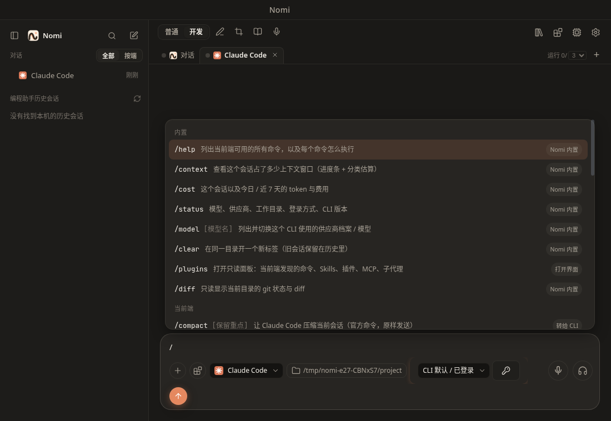
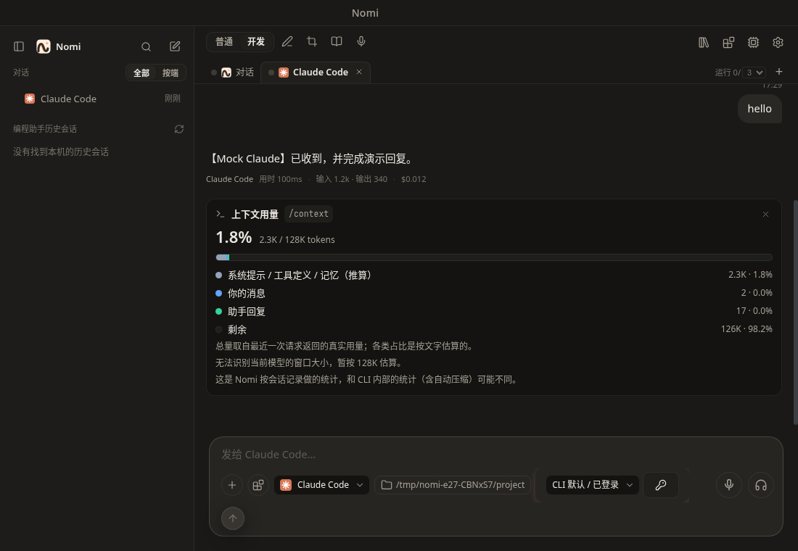

Slash commands
The / palette; built-ins run in the UI, the rest go to the CLI
This page has not been translated yet, so it is shown in Chinese.
在任意会话（Nomi 对话或编程助手标签）的输入框里输入 /，会弹出命令面板；选中后命令在 Nomi 界面里执行，结果以卡片形式出现在会话流里。

使用
| 操作 | 说明 |
|---|---|
输入 / | 弹出面板；继续输入做模糊搜索（/cnt 可以找到 /context） |
| ↑ ↓ | 选择命令 |
| Enter | 执行；需要参数的命令（面板里有参数提示）先补全成 /名字，再输入参数回车 |
| Tab | 只补全，不执行 |
| Esc | 关闭面板 |
//xxx | 发送字面的 /xxx（不当作命令） |
/usr/bin 这类路径 | 当作普通文字发送 |
面板按组排列：当前端点（该 CLI 自己的命令）、项目自定义、用户自定义、插件、Skills，最后是 Nomi 内置命令。每条命令右侧的小标签表示由谁执行：Nomi 内置、转给 CLI、已展开（Nomi 读取命令文件展开后发送）、不支持。
会话有工作目录时，输入 @ 可以补全里面的文件路径。
内置命令（本机执行，不占一轮模型对话）

/context：上下文窗口占用，进度条 + 分类明细。总量和 Claude Code / Codex 同一口径：最后一次模型请求的输入（含缓存读写）+ 输出，有真实用量时标「实际」，否则标「估算」；未识别的模型按 128K 计。Nomi 对话的明细分开列系统提示、工具定义、长期记忆和各类消息：内核按实际发出的请求估比例，再用这一轮第一次请求的真实输入、最后一次与第一次的差值校准，加起来等于总量。Grok 标签里/context交给 Grok 自己执行。/cost（/usage、/stats）：本会话与今日 / 近 7 天的 token 和费用，来自本机用量账本。/status：端点、模型 / 供应商、工作目录、登录方式、CLI 版本、会话。/model [名字]：列出可用的模型并切换；也可/model 名字直接切换。/mode：切换权限模式（计划 / 逐项确认 / 自动改文件 / 自动 / 完全放开），同Shift+Tab。/clear（/new、/reset）：开始新对话，旧对话留在历史里。/diff：当前工作目录的未提交改动（相对 HEAD，含未跟踪文件）。/plugins（/skills、/mcp、/agents）：打开只读的插件面板。/help：当前端点可用的命令和执行方式。
只在 Nomi 对话里：
/agent 名字 [需求]：指定交给哪个编程助手（默认后台执行），如/agent codex 修复登录 bug。带需求会立刻派出，不经过对话模型；没安装、关了委派或派不出去时对话里会说明，不会当成已经交出。只写名字时下一条消息交给它，/agent off取消。敲/就能在内置命令里看到它；敲/agent后会列出编程助手（已安装的在前，没安装的置灰）。详见 AI 对话。/compact [重点]：把较早的对话压缩成摘要，腾出上下文（快满时发送前也会自动压缩）；后面写的重点会优先保留。- 启用的 Nomi 技能（见 MCP 与技能）也以
/技能名出现，选中后按技能说明完成任务。
转给 CLI / 展开的命令
- Claude Code：
/compact、/init、/code-review、/security-review、/effort、/config等原样转给 CLI；项目 / 用户.claude/commands、.claude/skills里的自定义命令和 Skills 也会列出来，选中后原样转给 CLI。 - Codex：
/compact转给 Codex 压缩当前会话；项目 / 用户的 skills 由 Nomi 展开（$ARGUMENTS、$1…）后作为用户消息发送。 - Grok：Grok 无头模式能执行的命令（如
/compact、/context）和 skills 原样发给 Grok。 - Gemini、dsh：只有 Nomi 内置命令。
不支持与未知命令
当前接入方式下用不了的 CLI 自带命令（如 /memory、/permissions、/login、/resume）不进菜单；打出全名时说明原因和替代做法。输入不存在的 /xxx 时不会发给模型，而是提示未知命令，并提供「作为普通文字发送」。
插件面板（只读）
编程助手标签里从输入框「+」菜单的「插件 / 命令」（或 /plugins）打开：列出当前端点已发现的命令、Skills、插件、MCP 服务（只有名字与传输类型）和子代理。Nomi 对话里 /plugins 显示 Nomi 自己的技能与 MCP，管理在「扩展」里。面板没有开关：Nomi 不代你改写各 CLI 的配置。
隐私与安全
- 发现命令时只读文件名与开头（每个文件前 8 KB），不读取凭据 / 设置文件（
auth.json、.credentials*、.env*、settings*.json、config.toml、~/.claude.json）；.mcp.json只取服务名与传输类型。符号链接按解析后的真实路径判断。 - 命令文件由内核按 id 展开，视图不能传路径；命令文件里的
!`cmd`动态注入不会被 Nomi 执行。
实现
- 视图：
packages/ai-chat/src/slash（registry.ts、adapters/<端点>.ts、atPathComplete.ts）、components/SlashPalette、components/PluginPanel。 - 内核：命令发现
apps/desktop-go/internal/core/cli/slashdiscovery.go。